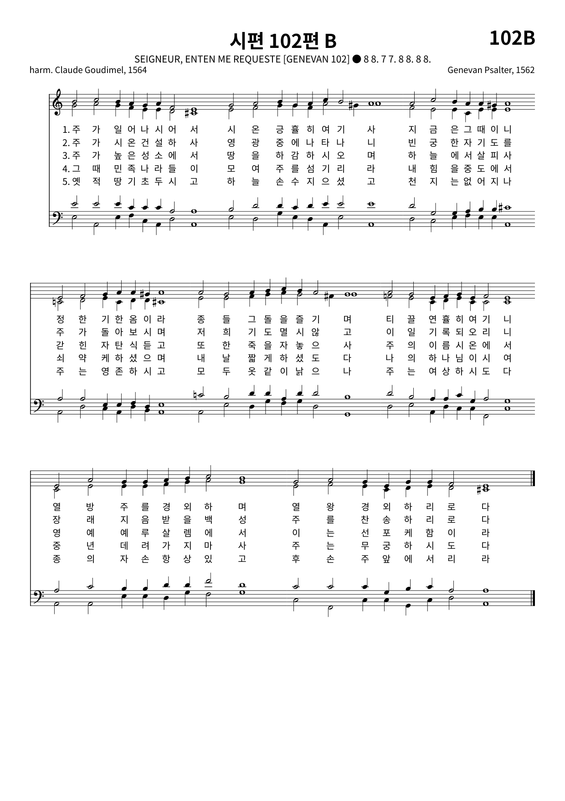

Psalm 102B
SEIGNEUR, ENTEN ME REQUESTE [GENEVAN 102] · 8 8. 7 7. 8 8. 8 8.
English title: Heed My Prayer, O LORD, Be Near Me
Tune: Genevan Psalter, 1562 · Harmony: Claude Goudimel, 1564 · Lyrics: Korean adaptation of Psalm 102 from the Korean Revised Version (AI draft adaptation · not yet theologically reviewed) · 5 stanzas
Psalm 102 is divided into 2 tunes: A B · This tune contains stanzas 5–9 of the Psalm 102 lyrics.
Score PDF MusicXML (for printing) MusicXML (for accompaniment, with prelude and repeats) Read Psalm 102 (Korean Revised Version)
Score
← Psalm 102A ListAccompaniment (in preparation)Psalm 103 →
Lyrics (Korean)
Stanza 1
주가 일어나시어서
시온 긍휼히 여기사
지금은 그 때이니
정한 기한 옴이라
종들 그 돌을 즐기며
티끌 연휼히 여기니
열방 주를 경외하며
열왕 경외하리로다
주가 일어나시어서
시온 긍휼히 여기사
지금은 그 때이니
정한 기한 옴이라
종들 그 돌을 즐기며
티끌 연휼히 여기니
열방 주를 경외하며
열왕 경외하리로다
Stanza 2
주가 시온 건설하사
영광 중에 나타나니
빈궁한 자 기도를
주가 돌아보시며
저희 기도 멸시 않고
이 일 기록되오리니
장래 지음 받을 백성
주를 찬송하리로다
주가 시온 건설하사
영광 중에 나타나니
빈궁한 자 기도를
주가 돌아보시며
저희 기도 멸시 않고
이 일 기록되오리니
장래 지음 받을 백성
주를 찬송하리로다
Stanza 3
주가 높은 성소에서
땅을 하감하시오며
하늘에서 살피사
갇힌 자 탄식 듣고
또한 죽을 자 놓으사
주의 이름 시온에서
영예 예루살렘에서
이는 선포케 함이라
주가 높은 성소에서
땅을 하감하시오며
하늘에서 살피사
갇힌 자 탄식 듣고
또한 죽을 자 놓으사
주의 이름 시온에서
영예 예루살렘에서
이는 선포케 함이라
Stanza 4
그때 민족 나라들이
모여 주를 섬기리라
내 힘을 중도에서
쇠약케 하셨으며
내 날 짧게 하셨도다
나의 하나님이시여
중년 데려가지 마사
주는 무궁하시도다
그때 민족 나라들이
모여 주를 섬기리라
내 힘을 중도에서
쇠약케 하셨으며
내 날 짧게 하셨도다
나의 하나님이시여
중년 데려가지 마사
주는 무궁하시도다
Stanza 5
옛적 땅 기초 두시고
하늘 손수 지으셨고
천지는 없어지나
주는 영존하시고
모두 옷 같이 낡으나
주는 여상하시도다
종의 자손 항상 있고
후손 주 앞에 서리라
옛적 땅 기초 두시고
하늘 손수 지으셨고
천지는 없어지나
주는 영존하시고
모두 옷 같이 낡으나
주는 여상하시도다
종의 자손 항상 있고
후손 주 앞에 서리라